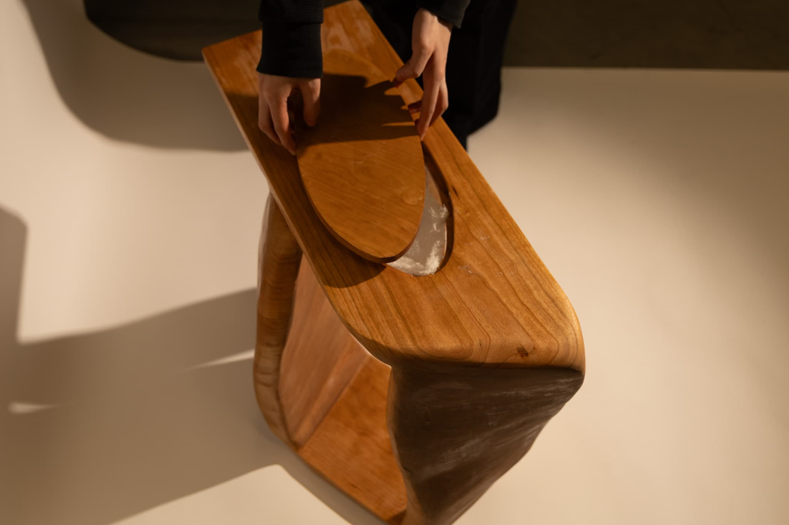
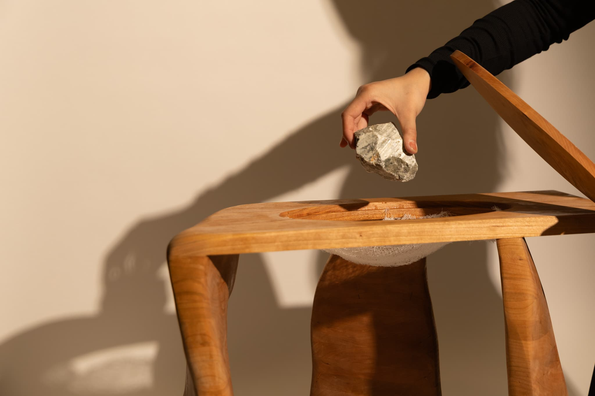
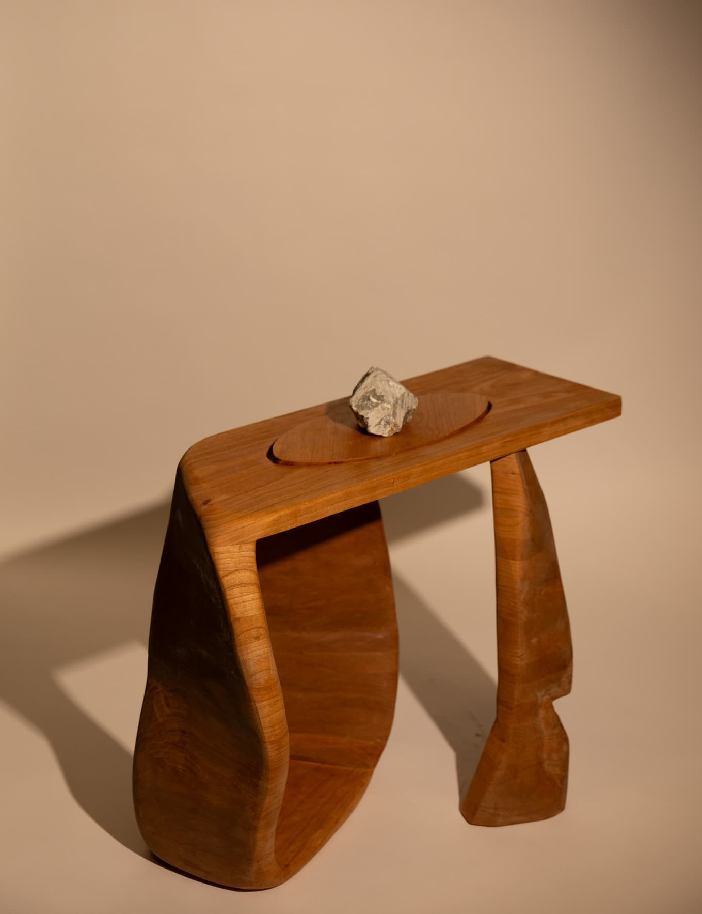
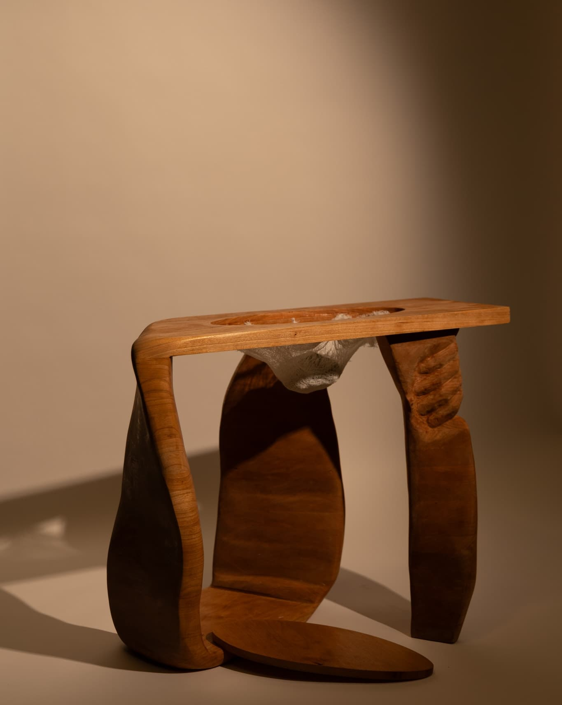
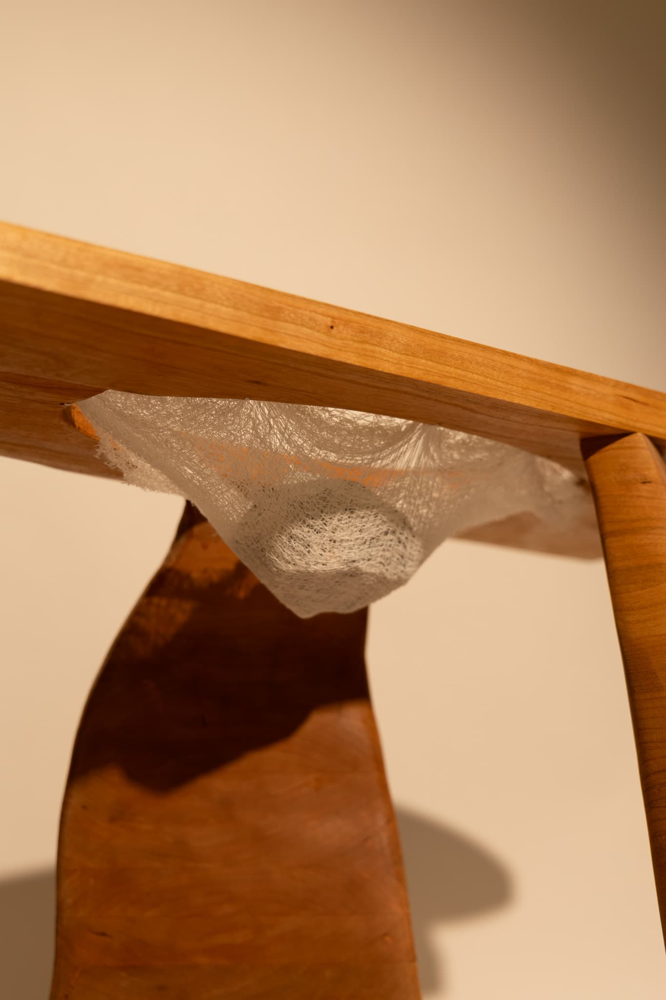
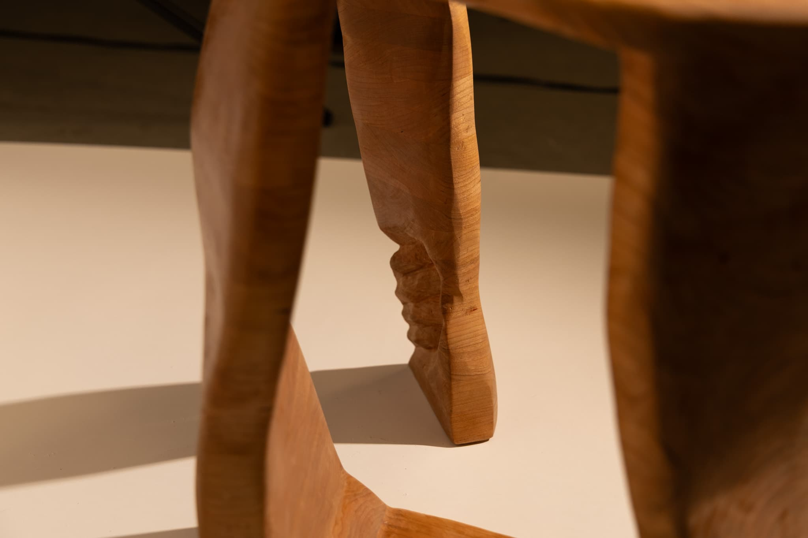

This not fully functional wooden table plays with the boundaries between object and illusion, perception and reality. Its smooth, curved form suggests familiarity—a neutral presence that could easily be mistaken for domestic furniture. Yet at its center lies an oval void, covered in delicate gauze hand-woven with thread. Though not tightly bound, the gauze is strong enough to cradle a stone, suggesting fragility and resilience at once.
A removable wooden cap allows the user to conceal or reveal the gauze and the stone. When the cap is in place and the object sits passively in a hallway or domestic space, its true nature remains hidden. Observers may dismiss it as “just a table,” never imagining the tension held just beneath the surface. This moment of concealment becomes the work’s core metaphor—a quiet commentary on how much we rely on surface appearances, often failing to question what we think we know.
One leg of the table is movable and flexible in form, inviting playful interaction. Carved into this leg is a hand—reaching, holding, perhaps even resisting—a subtle gesture that evokes both invitation and hesitation.
The piece encourages viewers to move, touch, and question. To lift the cap. To test the limits of the gauze. To reconsider what they see—and what they do not. In doing so, it asks: What truths lie beneath the things we take for granted? What parts of the world—and of ourselves—have we overlooked simply because they were hidden in plain sight?





